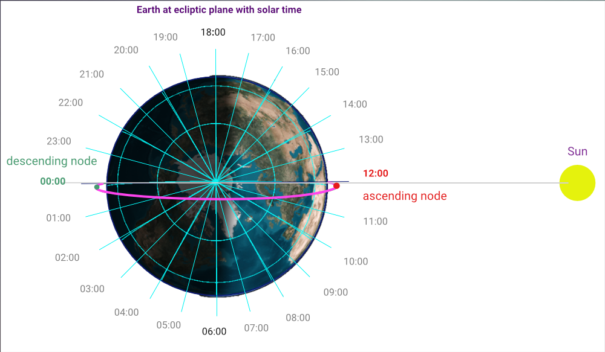

Polar Orbit
The polar orbit has an inclination of 90 degrees to the equator.
The orbit which passes within 20 or 30 degrees of the poles is considered as a polar orbit.
Satellites on that orbit pass over the polar regions of Earth, from north to south (takes around 99 minutes for a full lap).
Sun Synchronous Orbit (SSO)
Satellites on the SSO orbit pass over a point on the equator with the same solar time at each lap.
This orbit is useful to ensure the stability of the sunlight.
What is Solar time ?
The solar time is based on the position of the sun in the sky.
What are the Local Time Ascending Node (LTAN) and the Local Time Descending Node (LTDN) ?
The solar time will remain in the same position in relation to the sun. (Figure below)
When a point is exactly lined up with the direction of the sun, the solar time is 12h00.
When a point travels 15 degrees (360 degrees/24h of a circle) to the west, the solar time is exactly 13h00.
After an additional 15 degrees, the solar time will be exactly 14h00.

What is LTAN 12h00 a.m ?
LTAN: Local Time of Ascending Node
Satellites pass the ascending node from south to north.
The ascending node is represented by a red point on the figure.
LTAN 12h00 or LTAN Noon means that a satellite passes by the ascending node at 12h00 solar time .
After a full lap (around 99 minutes), a satellite on that orbit will pass again by the ascending node at the same solar time 12h00 .
What is LTDN 00h00 p.m ?
LTDN: Local Time of Descending Node
Satellites pass the descending node from north to south.
Descending node is represented by a green point on the figure.
LTDN 00h00 or LTDN Midnight means that a satellite passes by the descending node at 00h00 solar time.
After a full lap (around 99 minutes), a satellite on that orbit will pass again by the descending node at the same solar time 00h00 .